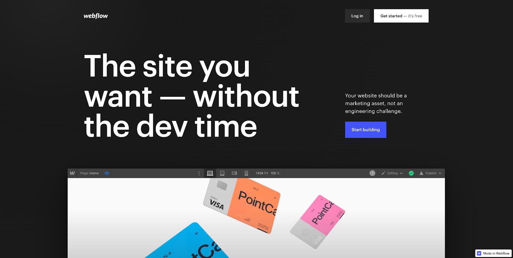

Prototyping tools for UI/UX
1.Figma
Consistency is a priority in web design, and you can use Figma’s flexible styles to control the appearance of text, grids, and other elements across a project. And a variety of useful plugins, like Autoflow for illustrating user flows, Figmotion for creating animations, and many others, enhance Figma’s functionality.
2.InVision Studio
With a host of well-designed tools, InVision gives designers the power to put together functional prototypes quickly and to share them with others. It offers so many nice features, including a handy vector drawing tool, repeatable components that can be changed sitewide, and tools for creating animations and other dynamic visual effects.
3.Adobe XD
Adobe XD offers a vector-based system for putting together prototypes, including tools for creating interactions, transitions, and other types of dynamic functionality. Because it’s vector based, scaling and resizing elements is no problem.

4.Webflow
Webflow takes care of two jobs at once. While you’re designing and building a high-fidelity prototype, you’re creating a live website that’s complete with all of the HTML, CSS, and associated JavaScript. You don’t end up with just a mockup — you’ll have the real deal.
